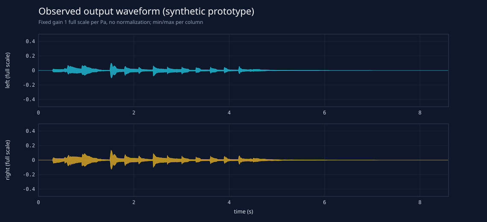
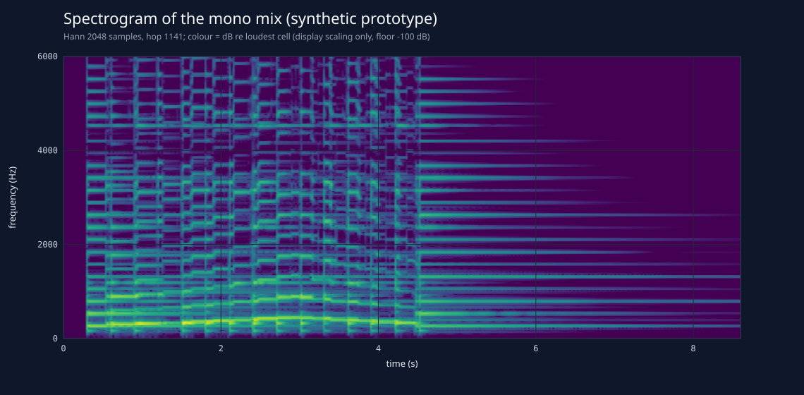
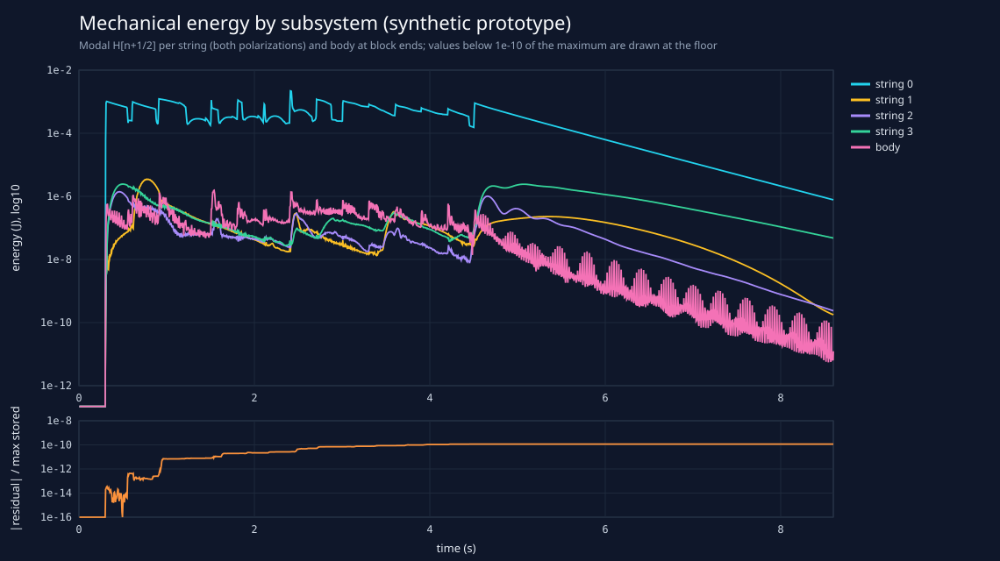
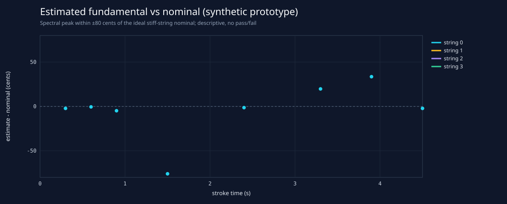

SYNTHETIC render of an unvalidated physical-model prototype with synthetic parameters. Not a measured or validated setar, not a recording, and not a fidelity, perceptual or realtime claim.
| score | Scale on string 0 through the synthetic fret map — status: synthetic demonstration; not a transcription of a performance or a validated gesture |
|---|---|
| score path | data/scores/02-fret-scale.score |
| config | synthetic setar prototype (tuning synthetic-c4-g3-c3-c4, fret map pythagorean-17-safi-al-din) (provenance: synthetic) |
| body | synthetic orthotropic plate + Helmholtz cavity + lateral bridge mode (not a measured setar) (provenance: synthetic, 48 modes) |
| tuning | synthetic-c4-g3-c3-c4 — synthetic educational example, not a documented performer tuning |
| fret map | pythagorean-17-safi-al-din — historical theory interval set used as a synthetic fret map; not a measured setar fret map and not a statement of performance practice |
| source revision | 3448c32 |
| render | 48000 Hz, 412800 frames, pcm24, gain 1/Pa, no normalization, no clipping |
| faults | first=none, rejected events=0, Newton failures=0, capacity overflows=0, containment resets=0 |
| timing | 2.57x realtime — wall-clock measurement on this machine for this run only; not a realtime qualification |
| energy ledger | max |residual| 3.71251e-13 J, relative to max stored 1.16741e-10 |
(copied unchanged from the render)




Hann window of 8192 samples starting 0.03 s after each nail stroke, zero-padded x2, largest mono-mix spectral peak within ±80 cents of the nominal, parabolic interpolation on log power. Sympathetic and other ringing strings are in the same mix; the estimate is descriptive only. Nominal frequencies are ideal stiff-string values for the speaking length implied by the score; they are not targets the model was tuned to and not measurements. 15 of 15 strokes analysed.
| time (s) | string | stop | fret | nominal (Hz) | estimate (Hz) | cents | note |
|---|---|---|---|---|---|---|---|
| 0.300 | 0 | open | 0 | 261.63 | 261.29 | -2.2 | |
| 0.600 | 0 | fret | 3 | 294.33 | 294.25 | -0.5 | |
| 0.900 | 0 | fret | 4 | 310.08 | 309.21 | -4.8 | |
| 1.200 | 0 | fret | 7 | 348.84 | — | — | no interior maximum in the search window |
| 1.500 | 0 | fret | 10 | 392.44 | 375.59 | -76.0 | |
| 1.800 | 0 | fret | 11 | 413.44 | — | — | no interior maximum in the search window |
| 2.100 | 0 | fret | 14 | 465.12 | — | — | no interior maximum in the search window |
| 2.400 | 0 | fret | 17 | 523.26 | 522.85 | -1.4 | |
| 2.700 | 0 | fret | 14 | 465.12 | — | — | no interior maximum in the search window |
| 3.000 | 0 | fret | 11 | 413.44 | — | — | no interior maximum in the search window |
| 3.300 | 0 | fret | 10 | 392.44 | 396.95 | +19.8 | |
| 3.600 | 0 | fret | 7 | 348.84 | — | — | no interior maximum in the search window |
| 3.900 | 0 | fret | 4 | 310.08 | 316.14 | +33.6 | |
| 4.200 | 0 | fret | 3 | 294.33 | — | — | no interior maximum in the search window |
| 4.500 | 0 | open | 0 | 261.63 | 261.29 | -2.2 |
It cannot show that the sound resembles a real setar: there is no measured specimen, no
recording comparison and no listening study. The observation is a synthetic far-field monopole/dipole
model of a synthetic body, not a calibrated microphone. The wall-clock speed is one run on one
machine, not a realtime qualification. See analysis.json for exact numbers and input
hashes.